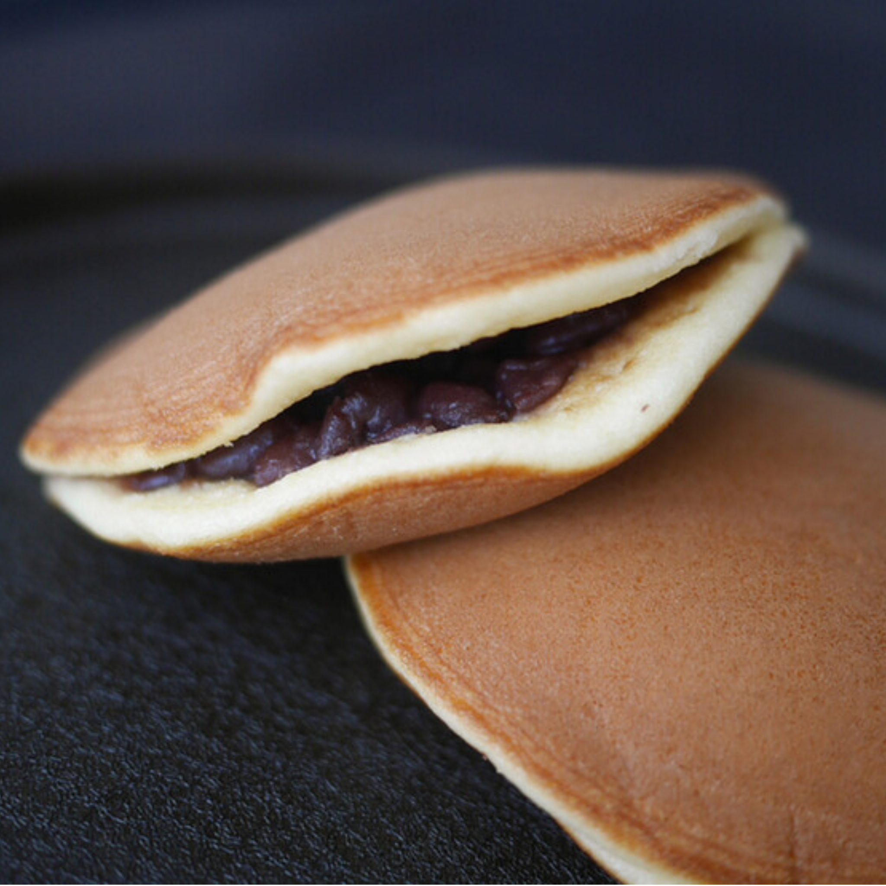

メニュー詳細
お茶（全7種）
-

- 八女茶
-
緑茶の一種である。特徴は、旨味と甘味、そして香りです。
八女茶の最上級にあたる玉露は低温でお茶を淹れると、渋みのない甘さや旨味が格別です。
ICE
-

- 狭山茶
-
狭山茶はコク味が特色の日本三大銘茶のひとつに数えられるお茶です。
仕上加工には古来より“狭山火入れ”と称される独特の火入れ技術が生かされています。
HOT
-

- 掛川茶
-
掛川茶は茶葉を蒸す時間が長いため、苦味や臭みが抑えられているのが特徴です。
美しく鮮やかな明るい緑色で、雑味なくスッキリした香りは飲む人を選ばず、老若男女に愛されています。
HOT
-

- 宇治茶
-
日本三大銘茶のひとつであり、緑茶の一種です。
製茶の工程である蒸し時間が短い「浅蒸し茶」で、黄色に近い明るい水色で、濁りが少なく澄んでいるのが特徴のお茶です。
ICE
-

- ほうじ茶
-
緑茶の一種であり、煎茶や番茶を焙煎したものです。
一番茶の新芽が使われる事はほとんどなく、ニ・三番茶以降の茶葉や茎の部分が使われている、比較的安価で身近なお茶です。
ICE
-

- 烏龍茶
-
中国発祥のお茶で、発酵を途中で止めた半発酵茶です。
深みのある味と香りが特徴的で、脂肪の吸収を抑える効果や、虫歯を予防する効果などがあります。
ICE
-
- 麦茶
-
一番の特徴は、一般的な茶葉のお茶に含まれる、カフェインやタンニンが含まれていないことです。
そのため、妊婦さんや赤ちゃんから高齢者まで幅広い方に飲まれています。
ICE
茶菓子（全2種）
-

- どらやき
-
上野に店舗を構える“うさぎや”。
ここのどら焼きは絶品です。
餡は、十勝産の小豆を使ったとてもやわらかい粒餡で、皮からこぼれでるほどたくさん入ってます。
-

- 都まんじゅう
-
カステラ風の生地で、主に白あんを包んだ「都まんじゅう」。
上野中通り商店街にある「かるた家」で発売しています。